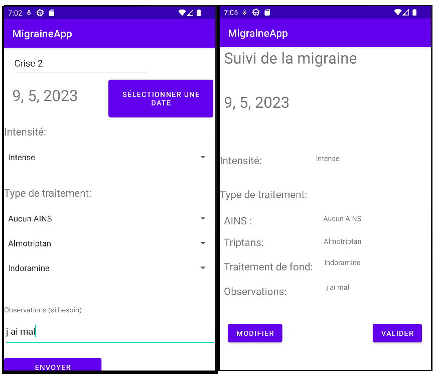
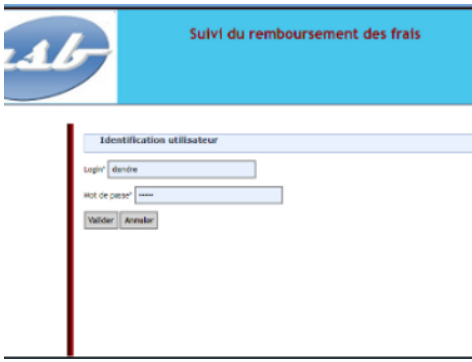

L'application migraine codé sur Android Studio qui permet à des utilisateurs suivants des régimes médicamenteux de recenser leurs crises
Compétences utilisées:
-Répondre aux incidents et aux demandes d’assistance et d’évolution
-Développer la présence en ligne de l’organisation
-Travailler en mode projet
-Organiser son développement professionnel
Le projet Appli Frais ou GSB est une application d'enregistrements des frais engagés et de suivi de remboursement, réalisée en PHP et contenant des requêtes SQL, les améliorations fournisent étaient un hachage de mot de passe pour augmenter la sécurité de ces derniers
Compétences utilisées:
-Répondre aux incidents et aux demandes d’assistance et d’évolution
-Gérer le patrimoine informatique
-Développer la présence en ligne de l’organisation
-Travailler en mode projet
-Mettre à disposition des utilisateurs un service informatique
-Organiser son développement professionnel